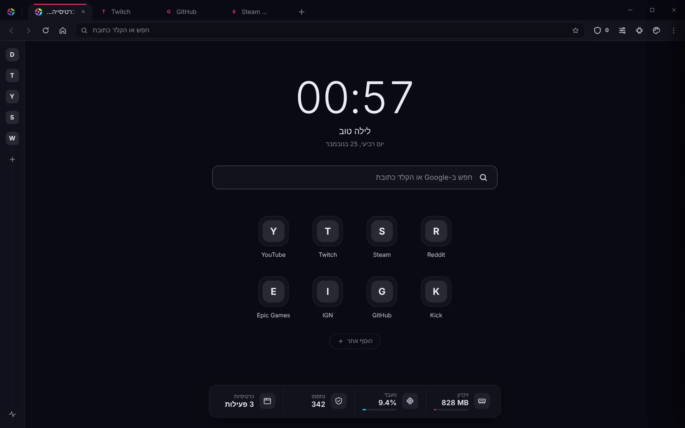
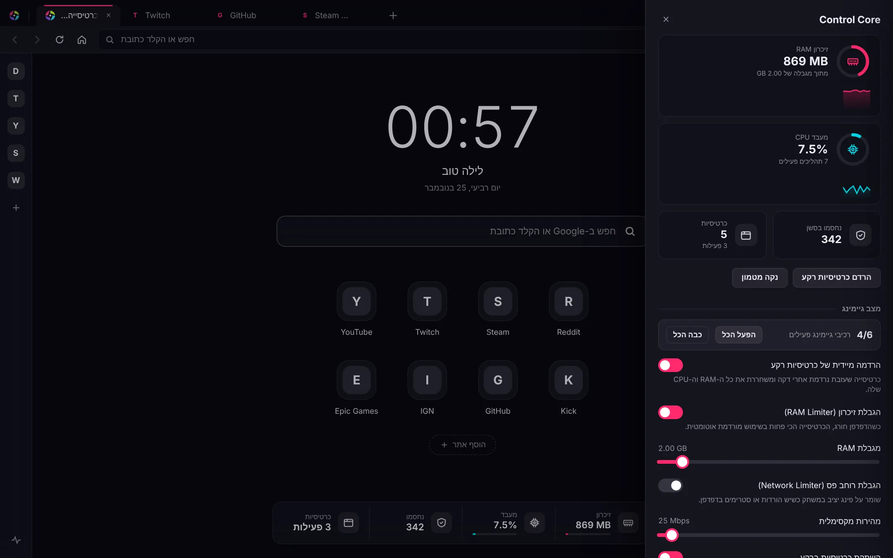
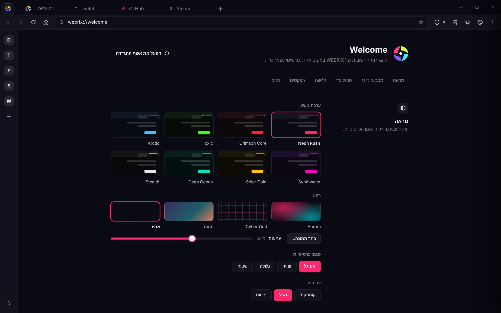
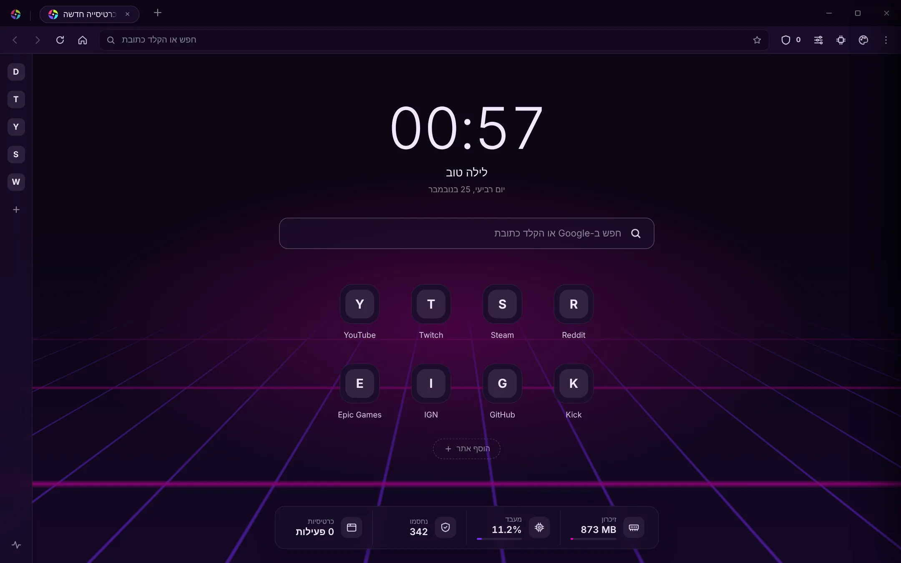
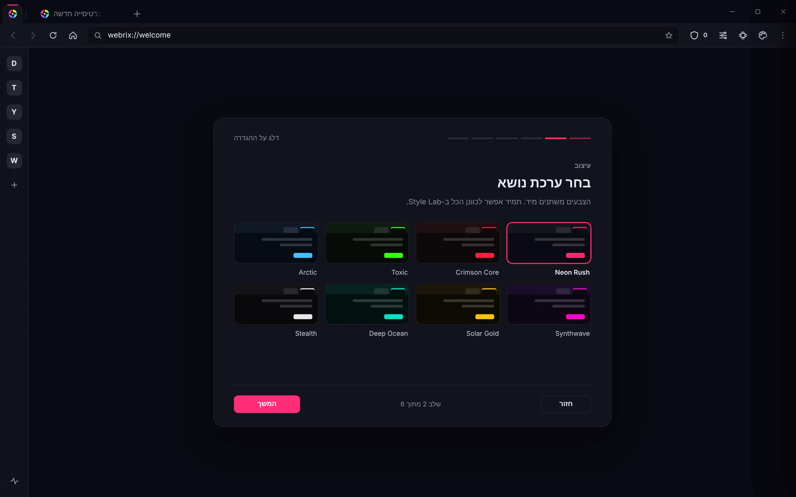

הדפדפן שלא מאט לך את המשחק.
WEBRIX מבוסס על Chromium ובנוי לגיימרים: מצב גיימינג שאתה בוחר בו מה פעיל, הגבלת זיכרון ורשת, וממשק שאפשר לעצב עד הפרט האחרון.

כל מה שגיימר צריך מדפדפן.
בלי תוספים ובלי הגדרות מסובכות. הכל מובנה ועובד מההפעלה הראשונה.
מצב גיימינג
בוחרים בדיוק מה פעיל: הרדמת כרטיסיות, הגבלת RAM ורשת, השתקת רקע וכיבוי אפקטים.
Control Core
זיכרון ומעבד בזמן אמת, עם גרפים וצריכה מפורטת לכל כרטיסייה.
כרטיסיות רדומות
כרטיסייה שלא נגעת בה נרדמת ומשחררת את כל הזיכרון שלה, וחוזרת בלחיצה.
חוסם פרסומות מובנה
חוסם פרסומות וטראקרים עוד לפני שהם נטענים, עם אפשרות לכבות אותו לאתר מסוים.
סרגל צד
Discord, Twitch, Spotify ו-WhatsApp בפאנל ליד כל אתר. אפשר להוסיף כל אתר שרוצים.
Style Lab
צבעים, רקעים, גופנים וסגנון כרטיסיות, ואפילו CSS משלך לאתרים ולדפדפן עצמו.
אתה מחליט מה רץ ברקע.
במקום כפתור אחד שמדליק הכל, כל רכיב הוא מתג נפרד. או שבוחרים פרופיל מוכן: ביצועים מקסימליים, מאוזן או רגיל.
- הגבלת RAM. חורגים מהסף? הכרטיסייה הכי פחות בשימוש נרדמת אוטומטית.
- הגבלת רוחב פס. הורדה או סטרים בדפדפן לא יקפיצו לך את הפינג.
- הרדמה מיידית. כרטיסייה שעזבת משחררת את הזיכרון והמעבד אחרי דקה.
- השתקה, אפקטים ו-GPU Boost. שקט ברקע, ממשק בלי אנימציות והאצת חומרה מלאה.

נראה בדיוק כמו שאתה רוצה.
ערכות נושא בלחיצה, רקעים מונפשים או תמונה משלך, וסגנון כרטיסיות לבחירה. כל ההגדרות זמינות בכרטיסיית Welcome הקבועה.



מוכן להתחיל?
WEBRIX חינמי לגמרי. בחר את מערכת ההפעלה שלך.
יש שאלות?
WEBRIX באמת חינמי?
כן. אין מנוי, אין גרסת פרימיום ואין פרסומות בדפדפן עצמו.
על מה הדפדפן מבוסס?
על Chromium, אותו מנוע שמריץ את Chrome. אתרים, סטרימים ומשחקי דפדפן עובדים בדיוק כמו שאתה רגיל.
אפשר להתקין תוספים מ-Chrome Web Store?
עדיין לא. בגרסה 1.0 התוספים לא נתמכים, אבל הרבה ממה שתוספים נותנים כבר מובנה: חוסם פרסומות, Dark Mode כפוי ו-CSS מותאם לאתרים.
איך עובדת הגבלת המעבד?
דרך הרדמה והאטה של כרטיסיות שלא בשימוש. אין הגבלה קשיחה באחוזים, כי Chromium לא מאפשר לשלוט בזה ישירות. הגבלת הזיכרון והרשת, לעומת זאת, הן אמיתיות.
WEBRIX אוסף מידע עליי?
WEBRIX לא אוסף נתוני שימוש ולא שולח אותם לשום שרת שלנו. ההיסטוריה וההגדרות נשמרות רק במחשב שלך.
יש בעיה בהתחברות עם Google.
Google חוסמת לפעמים התחברות מדפדפנים שמבוססים על Electron. התחברות רגילה לכל שאר האתרים עובדת כרגיל.